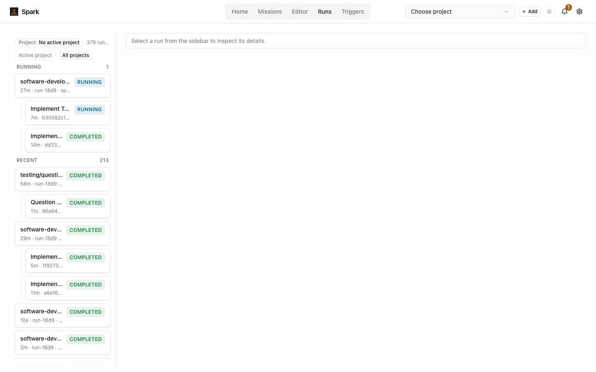
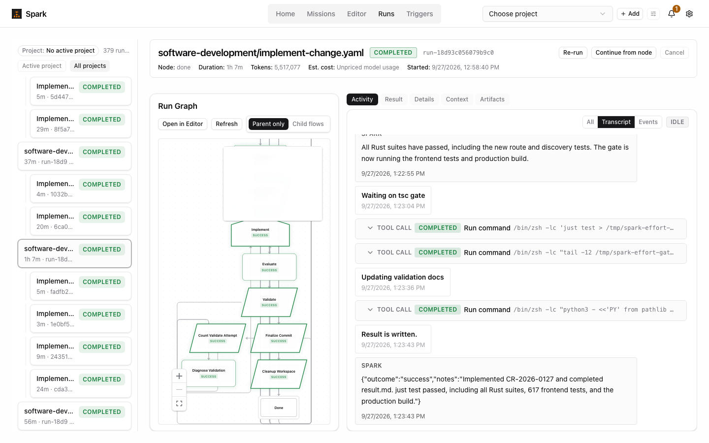
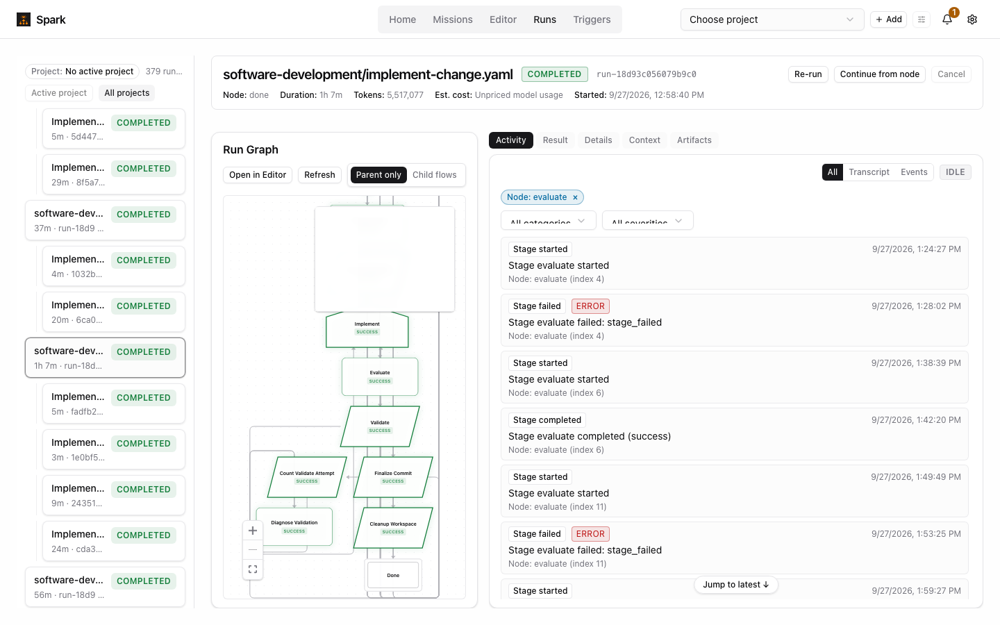
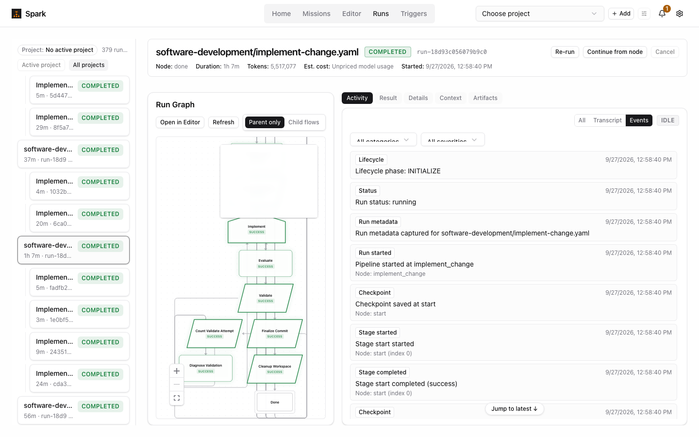
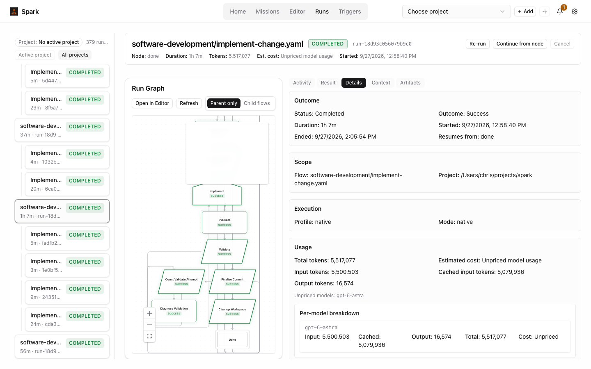
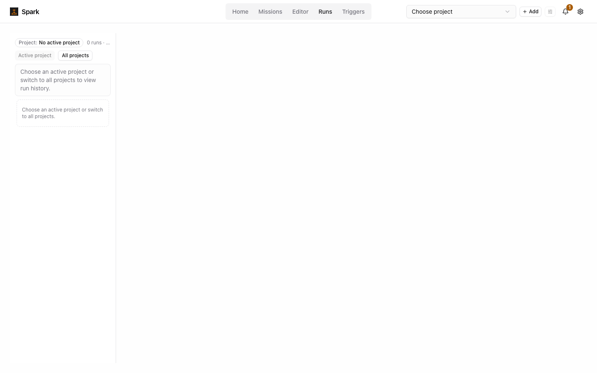

September 28, 2026. I read frontend/src/features/runs and the transcript projection in attractor-runtime, then drove the live app (read-only) on run-18d93c056079b9c0 (CR-2026-0127). That run executed Implement 4×, Evaluate 4× and Validate 2×, and spawned 4 child runs. The mockups below use that run's real data.
This is not one bug. Five defects stack, and together they make a looping run unreadable. An execution (node + visit) is not a first-class identity anywhere in the runs UI.
"turn_id": "response" (crates/attractor-runtime/src/handlers.rs:123, :1176). Segment ids are event-<local sequence> and final-response, which are unique only within one execution. In this run, 160 segments from 12 executions share one turn id, and 15 segment ids collide.buildRunTranscriptGroups keys groups on segment.turn_id (model/transcriptModel.ts:99), so the whole run collapses into one group. That group is labelled with whichever node came first, and rows from different executions are interleaved by their per-execution order. In the live app this run shows a single header, RESULT_SUMMARY, over 887 elements.fetchExecutionSegments (lib/api/attractorApi.ts:1155) knows stage_index but stamps only attempt. That is the retry count, which is 0 for every loop revisit. Even a corrected label could not say "Evaluate, visit 3".latest_sequence on a segment is the execution-local event number (up to ~541). Activity sorts it against root-journal sequences (1–70) (RunActivityCard.tsx:215), so the transcript blob lands after PipelineCompleted, and the transcript/event interleaving is meaningless.applySegmentUpsert dedupes on segment.id (state/runTranscriptStore.ts:63), so final-response or event-25 from visit 2 replaces the one from visit 1. React keys collide in the same way.Surrounding symptoms:
work).(index 11).failure_kind: business, routed on the Fix edge) renders as "Stage failed · ERROR · stage_failed". A normal, designed loop looks like a crash.Prerequisite for every proposal: carry (run_id, node_id, stage_index, attempt) on every segment and event. Make that tuple the group key and a globally unique id prefix, and give each execution an outcome that distinguishes routed from failed. Most of this can come from the executions list the status endpoint already returns. The rest is the two backend id literals above.

Runs list: every row reads "software-dev…", and every id reads "run-18d9"
Activity: the whole run as one transcript group; the minimap covers the top of the graph
Focusing Evaluate: routine review loops shown as ERROR; 4 visits merged
Events: bookkeeping (checkpoint, metadata) at the same weight as outcomes
Details: a key-value dump; "Resumes from: done"
Empty state: the same message twice; the count is truncated| Area | Finding (observed unless marked) |
|---|---|
| Runs list |
|
| Header |
|
| Graph |
|
| Activity |
|
| Missing entirely | Each execution's prompt.md, response.md and status.json (outcome, notes, context updates, review findings) exist on disk under logs/<node>/executions/<index>-<attempt>/, but no surface in the tab shows them. That is the most useful data in the run. The "why it looped" text (review summaries, diagnosis) is available only by reading files. |
| Information architecture |
|
| Tab | What it shows today | What replaces it (proposal F) |
|---|---|---|
| Context |
|
|
| Artifacts |
|
|
| Prompt / Response |
|
|
All four are clickable. Try selecting executions, the visit pickers, and the keyboard shortcuts noted on each page.
The run as an ordered list of executions grouped into passes (Setup, Pass 1–4, Wrap-up). Each visit is its own row with its outcome, summary, child run and duration. A detail pane shows that visit's transcript, prompt and response, with a visit switcher (1 2 3 4) and ←/→ between visits. A flow strip marks ×4 and ↺2 on the nodes that looped.
+ Fixes the repeated-node problem structurally. Scales to long runs. Cheap: a list plus a pane, and it reuses the transcript rows.
− Parallel branches need an indent treatment. It shows less of the flow's shape than the graph does.
A profiler-style timeline with one lane per node and one bar per execution. Colour shows outcome, and child runs appear as nested spans. Pass boundaries are marked. A side panel shows where the time went and a loop summary. Clicking a bar opens that execution.
+ Duration, parallelism and loops can be read at a glance. It is the only view that answers "why was this slow".
− Short steps become slivers. A timeline is a weaker reading surface than a list. Zoom and pan need building.
The graph becomes the page. Nodes carry visit badges and "ran 3× · last: succeeded". Edges carry traversal counts (×3 on Implement→Evaluate). A bottom scrubber steps or plays through the 18 executions and lights up the node and the edge just taken.
+ The most intuitive picture of how a loop happened. It reuses the existing graph investment and suits "Continue from this step".
− It inherits the graph-layout problems (G02). A scrubber with hundreds of steps gets dense. It is the most expensive option.
Runs home is an inbox with Needs you / Running / Failed cards over a searchable table titled by objective. A run page reads like a PR description: outcome facts, a short "What happened" account per pass, review findings with the pass that fixed each one, and evidence chips that open each execution. (inbox view)
+ Best for "did it work and why" and for people who didn't watch the run. It pairs naturally with Missions.
− The narrative needs a summarizer, or at least per-execution notes and review summaries. It is weak for watching a live run.
Design language options for F → Four candidate looks applied to the frozen F.
Open F, generalized → This is the frozen F layout, driven by generic/extract.py from six real run records (current log format only; older history is being wiped). The runs:
Nothing in the renderer is specific to one flow. The four design languages can be applied to it.
What held up:
What the real data exposed:
stage_failed, and the reason lives in a flow-specific key. The page can only say “no reason recorded · wrote review.summary”. The runtime should carry the agent's notes on failure, as it does on success.ParallelBranch* events, but none of the current-format runs on disk uses them, so that path hasn't been checked against real data.Mockups are static HTML (no build step): reports/runs-tab-redesign/. Current-state screenshots are in current/. The other runs in the sidebar are illustrative, and the transcripts are real but trimmed.